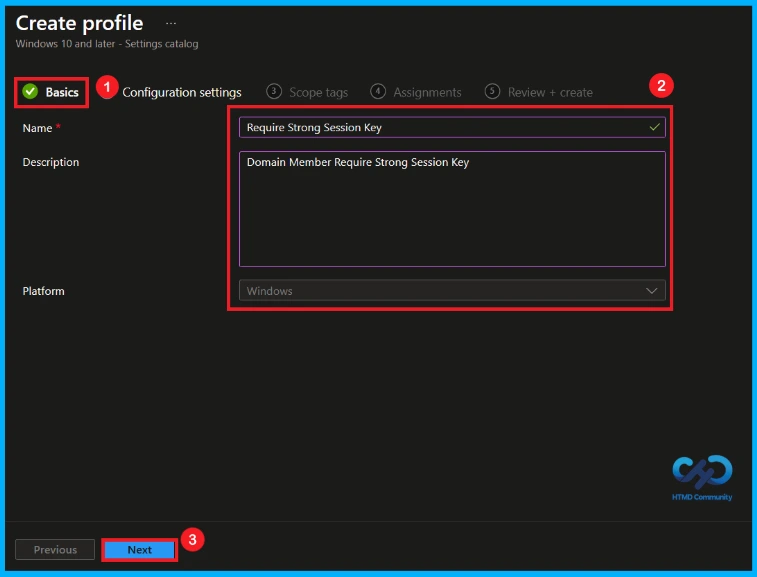
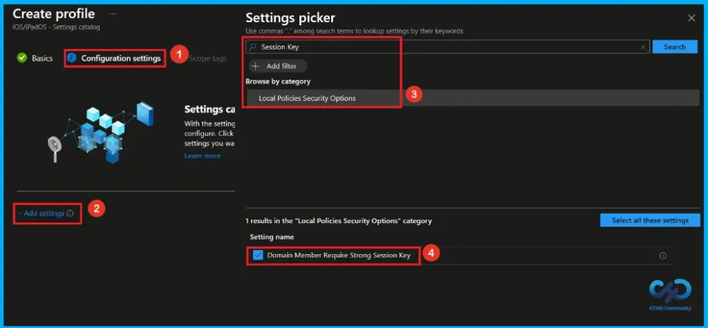
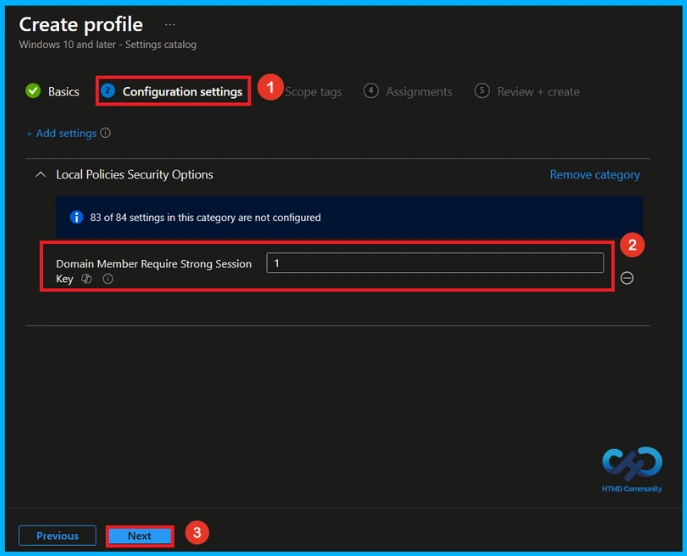
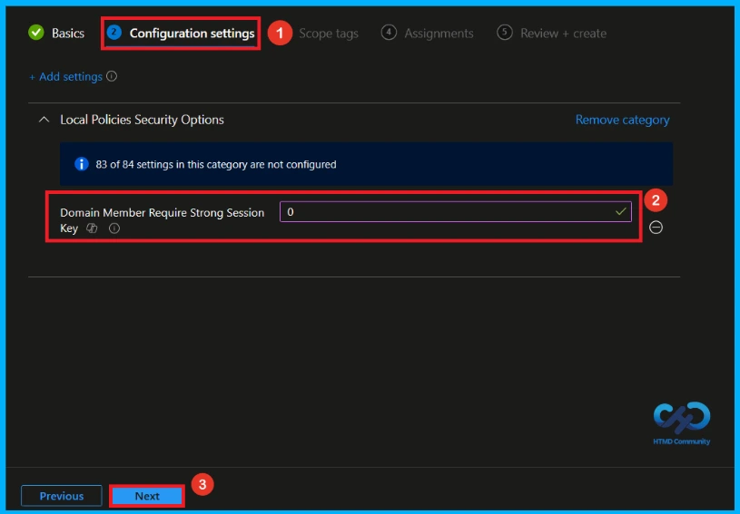
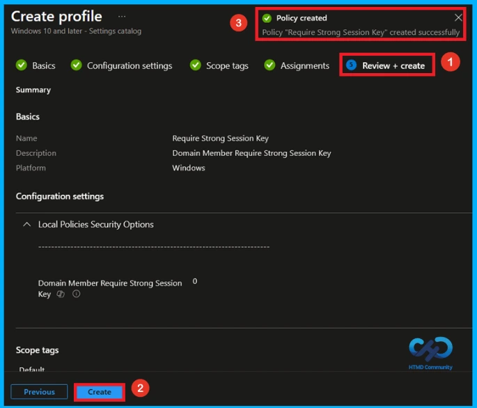
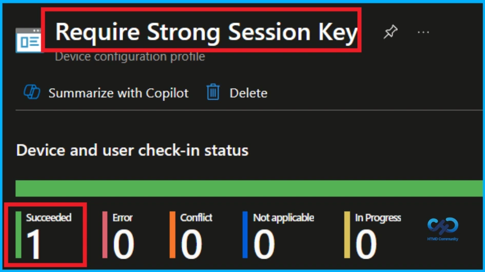
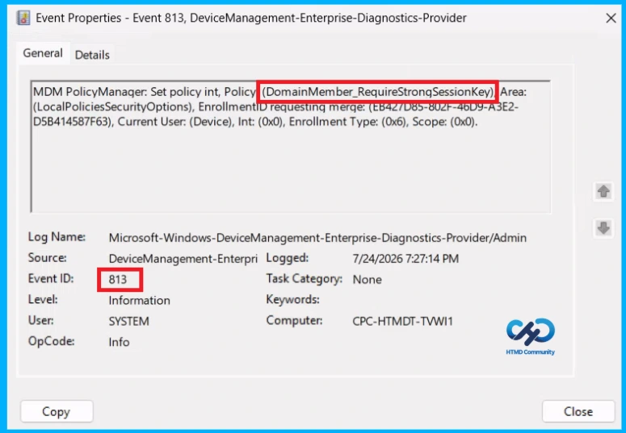
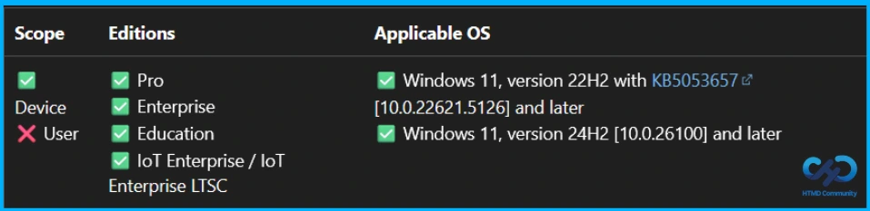
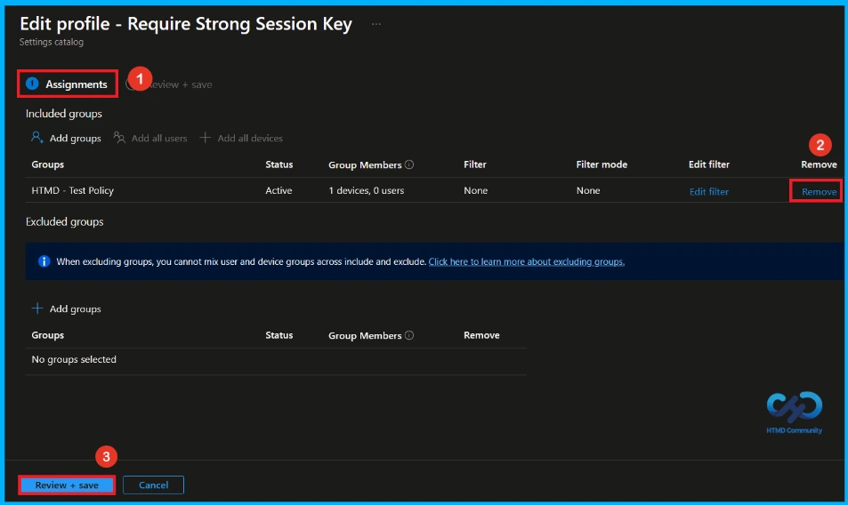
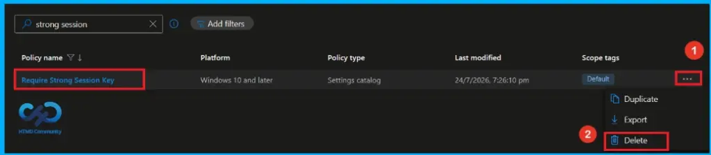

Key Takeaways
- Uses 128-bit encryption to secure communication with the domain controller.
- Improves security by protecting data sent over the secure channel.
- Requires Windows 2000 or later on all domain controllers.
- If disabled, Windows uses the encryption level supported by the domain controller.
Hey, let’s discuss about how to Secure Windows Domain Members with Strong Session Key Policy using Intune. The Domain Member Require Strong (Windows 2000 or Later) Session Key policy helps secure communication between a domain-joined computer and a domain controller. When a computer joins a domain, it creates a secure channel that is used for tasks such as user authentication and other domain-related operations.
Table of Contents
Secure Windows Domain Members with Strong Session Key Policy using Intune
When this policy is enabled, Windows uses 128-bit encryption to protect data sent over the secure channel. This stronger encryption helps keep communication secure and reduces the risk of sensitive information being intercepted or modified.
How to Create a Policy in Intune
To create a policy, the first step that you must do is to sign in to the Microsoft Intune Admin Centre. After clicking on the Device on the left side of the screen, select Configuration and then click Create and select New Policy.

Create a Profile
When you click on the New Policy, a box will appear in which you can specify the platform and profile type. From that, choose the platform as Windows 10 and later and profile type as Settings Catalog. Then, click Next to continue.

Basic Tab of Require Strong Session Key Policy
In the Basics tab of policy creation, type Require Strong Session Key as the policy name. Optionally, add the description Domain Member Require Strong Session Key. Once you’ve entered the required information, click Next to continue.

Configure Require Strong Session Key Policy
In Configuration settings, click + Add settings to open the Settings picker. In the Settings picker, search for Session Key using the search bar, or navigate to the Local Policies Security Options category. Then, select the Domain Member Require Strong Session Key policy.

Enable Domain Member Require Strong Session Policy
Once you have selected the Domain Member Require Strong Session Key policy and closed the Settings picker, the policy will appear on the Configuration settings page. If this setting is enabled, a secure channel is established only if 128-bit encryption is supported. Set the policy to Enabled (1), then click Next to continue with the profile configuration.

Disable Domain Member Require Strong Session Policy
If this setting is disabled, the encryption strength is negotiated with the domain controller. To use this policy, all domain controllers in the domain (and trusted domains for domain controllers) must be running Windows 2000 or later. Set the policy to Enabled(0), then click Next to continue.

What is Scope Tag
In the Scope tags section, you can assign one or more scope tags to the policy so that only specific IT teams or administrators have access to it. To add a scope tag(Not mandatory), click Select scope tags, choose the required tag, and then click Next.

Assignment tab of Require Strong Session Policy
To assign the policy to specific groups, go to the Assignment tab. Under Included groups, click + Add groups. Select the HTMD_Test Policy group from the list, and then click Select. Finally, click Select again to save the assignment and continue.

Final Step of Policy creation
On the Review + create page, review the settings to ensure they are correct. If you need to make changes, click Previous to update the configuration. When everything is correct, click Create to create the policy. A notification confirms that the policy Require Strong Session Key created successfully.

Review and Deploy the Policy
The Monitoring Status page shows whether the policy has succeeded or not. To quickly configure the policy and take advantage of the policy sync the assigned device on Company Portal. Open the Intune Portal. Go to Devices > Configuration > Search for the Policy(Require Strong Session Key). Here, the policy shows as successful.

Client Side Verification
Open the Client device and open the Event Viewer. Go to Start > Event Viewer. Navigate to Logs: In the left pane, go to Application and Services Logs > Microsoft > Windows > DeviceManagement-Enterprise-Diagnostics-Provider. Event ID 813.
MDM PolicyManager: Set policy int, Policy (DomainMember_RequireStronqSessionKey)Area:
(LocalPoliciesSecurityOptions), EnrollmentID requesting merge: (EB42/D85-802F-46D9-A3E2-
D5B414587F63), Current User: (Device), Int: (0x0), Enrollment Type: (0x6), Scope: (0x0).

Configuration Service Provider (CSP)
The Policy Configuration Service Provider (CSP) is used by organizations to manage and configure settings on Windows 10 and Windows 11 devices. It provides information about the policy, including its description framework properties, and Group policy mapping.
Description framework properties:
- Format – int
- Access Type – Add, Delete, Get, Replace
- Allowed Values – Range:
[0-1] - Default – 0
Group policy mapping:
| Name | Value |
|---|---|
| Name | Domain member: Require strong (Windows 2000 or later) session key |
| Path | Windows Settings > Security Settings > Local Policies > Security Options |

How to Remove Assigned Group from Require Strong Session Key Policy
To stop the Require Strong Session Key policy from applying to certain users or devices, remove the assigned group. Go to Devices > Configuration profiles, select the Require Strong Session Key policy, open Assignments, and remove the group from the list.
For detailed information, you can refer to our previous post – Learn How to Delete or Remove App Assignment from Intune using by Step-by-Step Guide.

How to Delete Require Strong Session Key Policy from Intune
If the policy is no longer needed, you can delete it from Intune. Go to Devices > Configuration profiles, select then Require Strong Session Key policy, and click Delete. This permanently removes the policy and stops it from applying to devices.
For detailed information, you can refer to our previous post – Learn How to Delete or Remove App Assignment from Intune using by Step-by-Step Guide.

Need Further Assistance or Have Technical Questions?
Join the LinkedIn Page and Telegram group to get the latest step-by-step guides and news updates. Join our Meetup Page to participate in User group meetings. Also, join the WhatsApp Community and the Whatsapp channel to get the latest news on Microsoft Technologies. We are there on Reddit as well.
Author
Anoop C Nair has been Microsoft MVP from 2015 onwards for 10 consecutive years! He is a Workplace Solution Architect with more than 22+ years of experience in Workplace technologies. He is also a Blogger, Speaker, and Local User Group Community leader. His primary focus is on Device Management technologies like SCCM and Intune. He writes about technologies like Intune, SCCM, Windows, Cloud PC, Windows, Entra, Microsoft Security, Career, etc